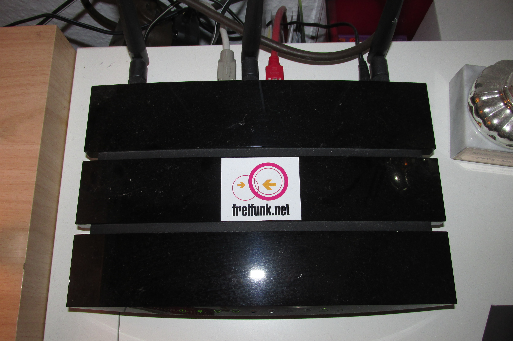
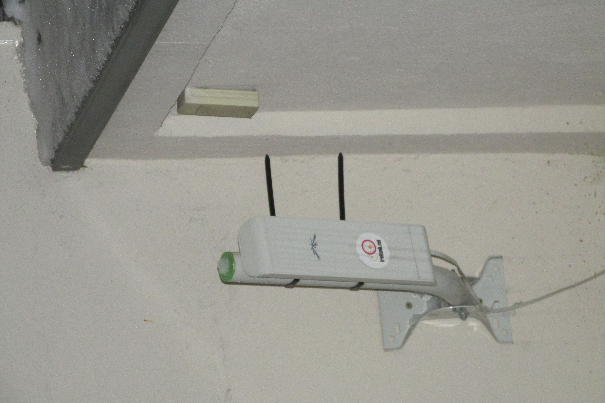
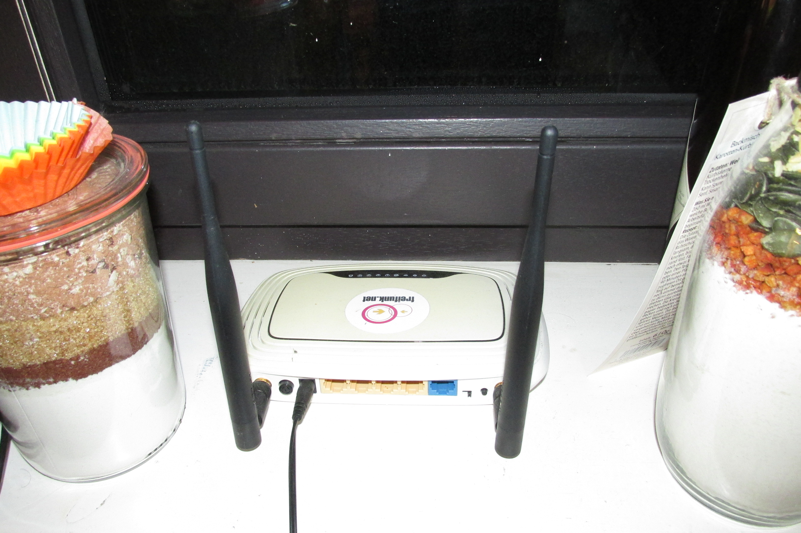
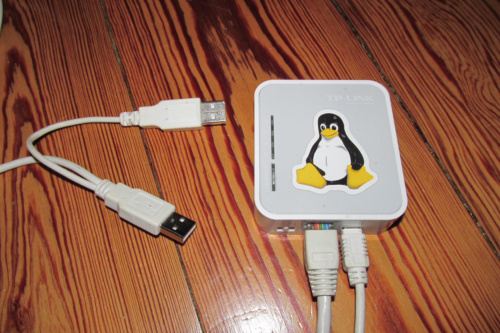

Freifunk Magdeburg
Die technische Seite
2017-01-23
Zusammenspielende Komponenten
Knoten bzw. Router aka Geräte
weiße Plastekisten
Firmware
Gateways
Hardware
Software
Betriebssystem
Routing
Karte
Help!
Knoten
Hardware
Von Gluon (v2016.1.5)
unterstützte Geräte
:
TP-Link
Ubiquiti
x86
u.v.m. …
TP-Link TL-WDR4300 (v1)

Ubiquiti Nanostation M2

TP-Link TL-WR841ND (v8)

TP-Link TL-MR3020 (v1)

Knoten
Firmware
Software, die auf den Knoten läuft
Linux
OpenWRT
Gluon
Freifunk Magdeburg (v0.37): v2016.1.5 (2016-03-26)
aktuelle Version upstream: v2016.2.2 (2016-12-18)
LEDE
Gluon
Buildsystem für OpenWRT/LEDE
Download
Compile
Pack
OpenWRT plus verschiedene
packages
(OpenWRT, Gluon, Routing, Luci)
Community specific configuration:
site
OpenWRT / LEDE
tbd …
Gateways
tbd …